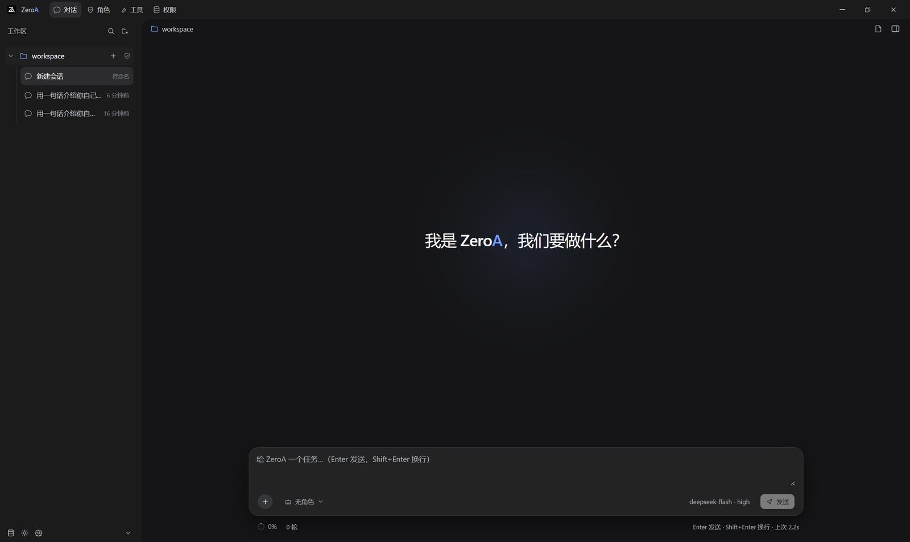
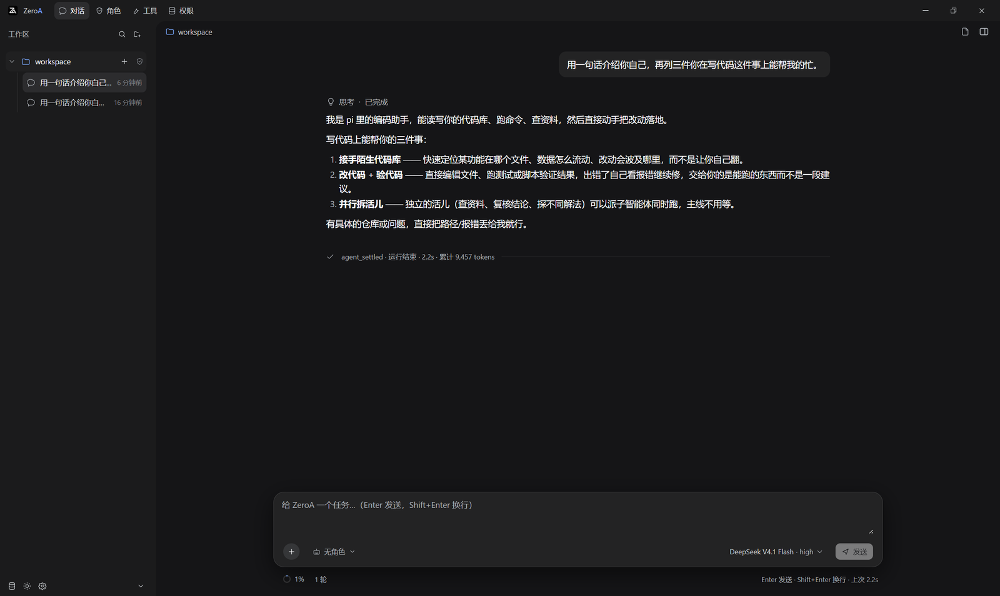
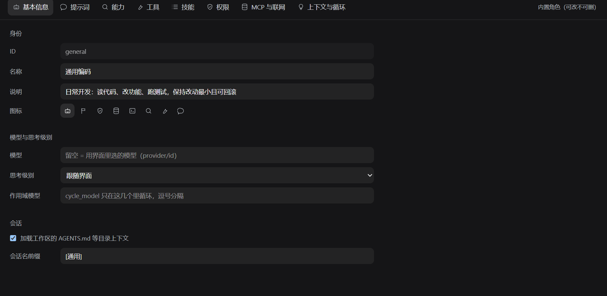
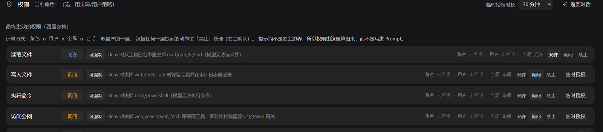
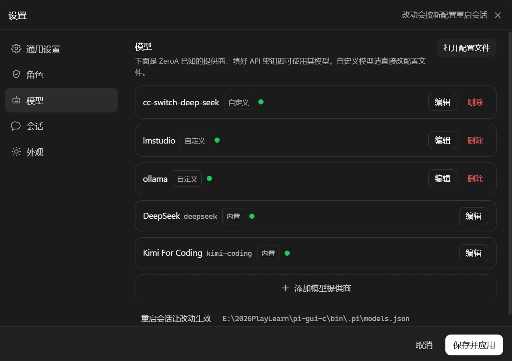
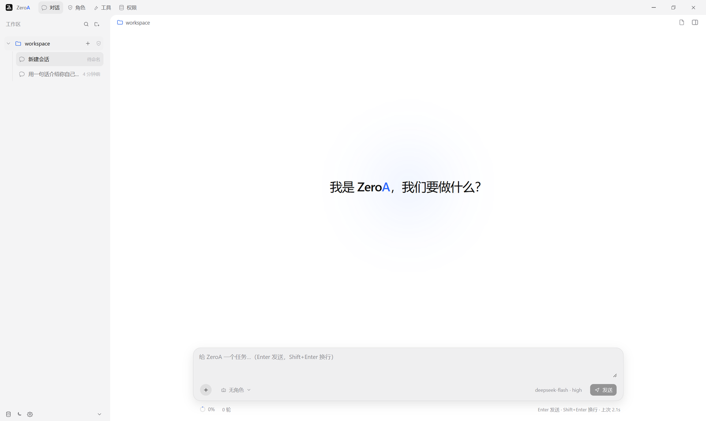

Roles
角色：给 AI 一份岗位说明书
角色 = 提示词 + 工具白名单 + 技能 + 模型与思考级别。为不同任务准备不同角色，在输入框一角随时切换。
- 提示词与人设 — 写明身份、目标与边界，ZeroA 全程按此行事。
- 工具白名单 — 只开放这个角色需要的工具，最小可用原则。
- 技能挂载 — 把
SKILL.md工作流绑定到角色上。 - 模型与思考级别 — 可为角色固定模型，或跟随界面选择。
- 导入 / 导出 — 角色配置成文件，在团队与设备间自由分享。
ZeroA 是一个桌面 AI 编程工作台：把会话、角色、权限和模型装进一个窗口，让 AI 直接在你的项目里读代码、改功能、跑验证。

从提问到落地：ZeroA 把 AI 对话和真实工作区连在一起，改动发生在你的文件上，而不是聊天框里。
按项目组织会话，历史记录本地持久化。多个任务并行推进，随时切回之前的上下文继续。
回复逐字流式输出，思考级别可调；每轮的 token 消耗、耗时与工具调用一目了然。
把文件、截图、日志直接拖进输入框，作为上下文一起发给模型，省去复制粘贴。
内置文件面板直接浏览项目目录与文件内容，AI 读过的文件你可以随时核对。
用 SKILL.md 把可复用的工作流程教给 ZeroA——从代码审查到报告生成，一次编写反复使用。
通过 MCP 协议接入外部工具与数据源，联网检索可按角色开关，能力边界自己说了算。
每一步工具调用、每一处改动意图都展开在对话里，AI 不再是黑盒。

角色 = 提示词 + 工具白名单 + 技能 + 模型与思考级别。为不同任务准备不同角色，在输入框一角随时切换。
SKILL.md 工作流绑定到角色上。

读取文件、写入文件、执行命令、访问公网——每一项能力都要穿过应用、角色、会话与单次确认的多重关卡。AI 能做什么，永远由你划定。
在一个地方配置多家模型提供商，按任务挑最合适的那个；思考级别随场景调节，成本与质量自己平衡。
low / medium / high，简单问题不浪费。
两套精心调校的主题，跟随你的工作环境与心情。点右上角按钮，这个页面也会一起变。
